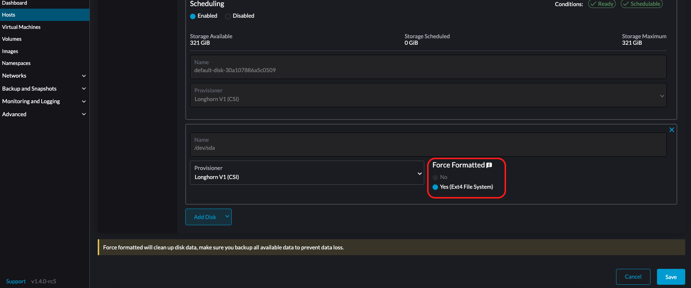
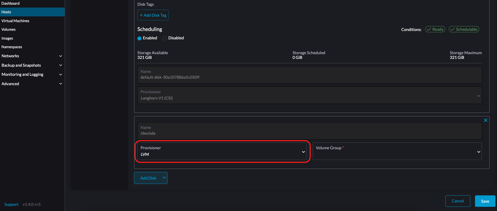
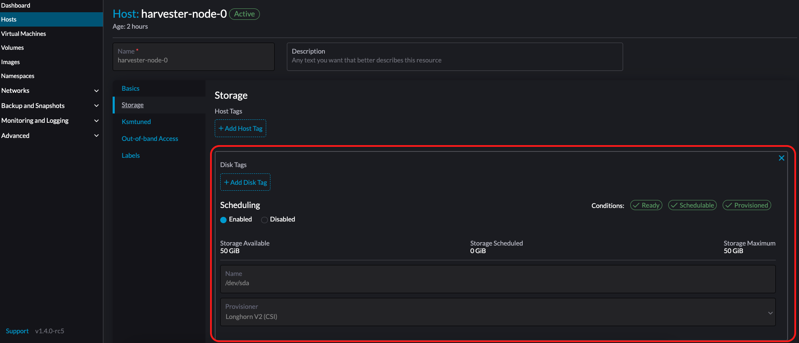
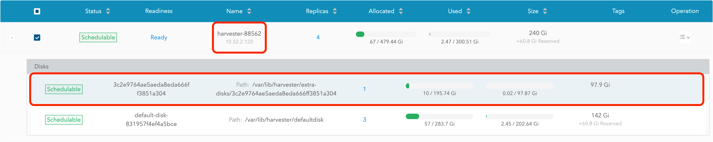
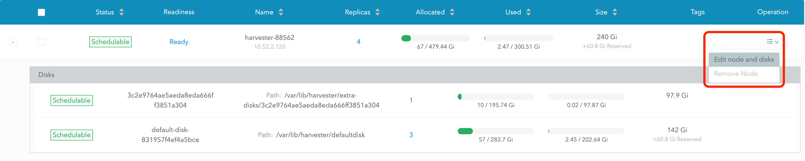
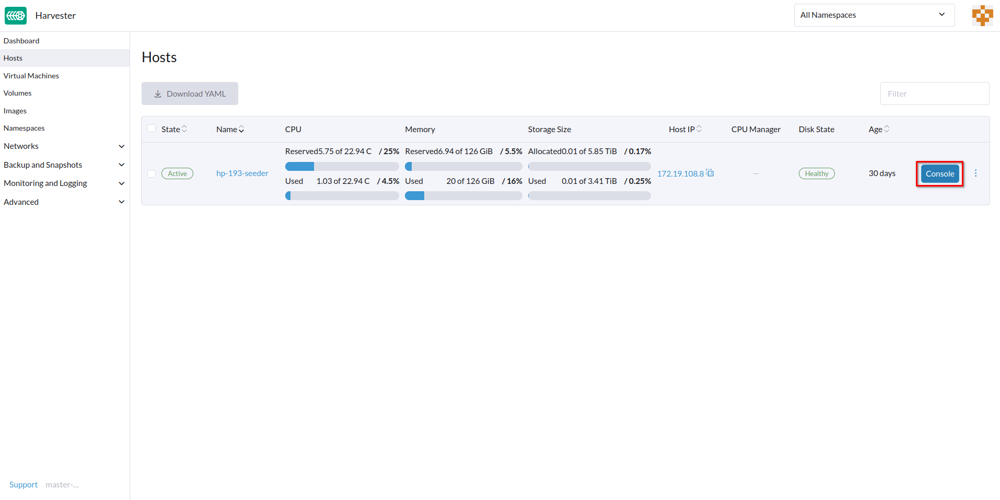

|
Ce document a été traduit à l'aide d'une technologie de traduction automatique. Bien que nous nous efforcions de fournir des traductions exactes, nous ne fournissons aucune garantie quant à l'exhaustivité, l'exactitude ou la fiabilité du contenu traduit. En cas de divergence, la version originale anglaise prévaut et fait foi. |
Administration des hôtes
Les utilisateurs peuvent voir et gérer les nœuds SUSE Virtualization depuis la page d’accueil. Le premier nœud est toujours par défaut un nœud de gestion du cluster. Lorsque trois nœuds ou plus sont présents, les deux autres nœuds qui ont rejoint en premier sont automatiquement promus en nœuds de gestion pour former un cluster HA.
|
Parce que SUSE Virtualization est construit sur Kubernetes et utilise etcd comme base de données, la tolérance maximale aux pannes des nœuds est fixée à 1 lorsque trois nœuds de gestion sont présents. |

SUSE Virtualization réserve des ressources UC pour les opérations au niveau système, c’est pourquoi le nombre total de cœurs indiqué dans la colonne CPU est légèrement inférieur au nombre réel de cœurs sur chaque hôte. Pour plus d’informations, voir Calcul du pool CPU partagé.
Maintenance des nœuds
Les utilisateurs administrateurs peuvent activer le mode de maintenance (sélectionner ⋮ > Activer le mode de maintenance) pour évincer automatiquement toutes les machines virtuelles d’un nœud. Ce mode utilise la migration par lot pour déplacer les machines virtuelles migrables en direct vers d’autres nœuds, ce qui est utile lorsque vous devez redémarrer, mettre à jour le firmware ou remplacer des composants matériels. Au moins deux nœuds actifs sont nécessaires pour utiliser cette fonctionnalité.
Les machines virtuelles non migrables peuvent empêcher le nœud d’activer le mode de maintenance. Lorsque cela se produit, vous devez identifier et éteindre manuellement ces machines virtuelles. Pour plus d’informations, voir Migration en direct.
Pour forcer des VM individuelles à s’éteindre au lieu de migrer vers d’autres nœuds, ajoutez l’étiquette harvesterhci.io/maintain-mode-strategy et l’une des valeurs suivantes à ces VM :
-
Migrate: Migre la VM en direct vers un autre nœud du cluster. C’est le comportement par défaut si l’étiquetteharvesterhci.io/maintain-mode-strategyn’est pas définie. -
ShutdownAndRestartAfterEnable: Redémarre la VM après que le nœud passe en mode maintenance. La VM est programmée sur un nœud différent. -
ShutdownAndRestartAfterDisable: Éteint la VM lorsque le mode de maintenance est activé, et redémarre la VM lorsque le mode de maintenance est désactivé. La VM reste sur le même nœud. -
Shutdown: Éteint la VM lorsque le mode de maintenance est activé. La VM reste éteinte au lieu de redémarrer.
Vous pouvez forcer un arrêt collectif de toutes les VMs sur un nœud à l’écran Activer le mode de maintenance. Cela désactive les paramètres individuels en utilisant l’étiquette harvesterhci.io/maintain-mode-strategy.
Pour exécuter une commande spéciale avant d’éteindre une VM, envisagez d’utiliser le crochet de cycle de vie du conteneur PreStop.

Cordonner un nœud
Les nœuds cordonnés sont marqués comme non planifiables. Le cordonnage est utile lorsque vous souhaitez empêcher de nouvelles charges de travail d’être planifiées sur un nœud. Vous pouvez décordonner un nœud pour le rendre planifiable à nouveau.

Suppression d’un nœud
|
Avant de supprimer un nœud d’un cluster SUSE Virtualization, déterminez si les nœuds restants disposent de suffisamment de ressources de calcul et de stockage pour prendre en charge la charge de travail du nœud à supprimer. Vérifiez les points suivants :
Si les nœuds restants n’ont pas suffisamment de ressources, les VMs pourraient échouer à migrer et les volumes pourraient se dégrader lorsque vous supprimez un nœud. |
1. Vérifiez si le nœud peut être supprimé du cluster.
Vous pouvez supprimer en toute sécurité un nœud de plan de contrôle en fonction de la quantité et de la disponibilité des autres nœuds dans le cluster.
-
Le cluster a trois nœuds de plan de contrôle et un ou plusieurs nœuds de travail.
Lorsque vous supprimez un nœud de plan de contrôle, un nœud de travail sera promu au statut de nœud de plan de contrôle. SUSE Virtualization vous permet d’assigner un rôle à chaque nœud qui rejoint un cluster. Dans les versions antérieures, les nœuds de travail étaient sélectionnés au hasard pour la promotion. Si vous préférez promouvoir des nœuds spécifiques, consultez Gestion des rôles et Fichier de configuration pour plus d’informations.
La promotion automatique des nœuds se produit uniquement lorsqu’un nœud de plan de contrôle est supprimé du cluster. Cela n’inclut pas les situations où un nœud devient indisponible en raison d’échecs de vérification de santé. Le nœud non sain conserve son rôle.
-
Le cluster a trois nœuds de plan de contrôle et aucun nœud de travail.
Vous devez ajouter un nouveau nœud au cluster avant de supprimer un nœud de plan de contrôle. Cela garantit que le cluster a toujours trois nœuds de plan de contrôle et qu’un quorum peut être formé même si un nœud de plan de contrôle échoue.
-
Le cluster n’a que deux nœuds de plan de contrôle et aucun nœud de travail.
La suppression d’un nœud de plan de contrôle dans cette situation n’est pas recommandée car les données etcd ne sont pas répliquées dans un cluster à nœud unique. La défaillance d’un seul nœud peut entraîner la perte du quorum d’etcd et l’arrêt du cluster.
2. Vérifiez l’état des volumes.
-
Accédez à l’interface utilisateur SUSE Storage intégrée.
-
Allez à l’écran Volume.
-
Vérifiez que l’état de tous les volumes est Sain.
3. Évincez les répliques du nœud à supprimer.
-
Accédez à l’interface utilisateur SUSE Storage intégrée.
-
Allez à l’écran Nœud.
-
Sélectionnez le nœud que vous souhaitez supprimer, cliquez sur l’icône dans la colonne Opération, puis sélectionnez Modifier le nœud et les disques.
-
Configurez les paramètres suivants :
-
Planification des nœuds : Sélectionnez Désactiver.
-
Éviction demandée Sélectionnez Vrai.
-
-
Cliquez sur Enregistrer.
-
Retournez à l’écran Nœud et vérifiez que la valeur Répliques pour le nœud à supprimer est 0.
|
L’éviction ne peut pas être complétée si les nœuds restants ne peuvent pas accepter de répliques du nœud à supprimer. Dans ce cas, certains volumes resteront dans l’état Dégradé jusqu’à ce que vous ajoutiez d’autres nœuds au cluster. |
4. Gérer les machines virtuelles non migrables
Vérifiez s’il y a des machines virtuelles non migrables.
|
5. Évincez les charges de travail du nœud à supprimer.
Vous pouvez activer le Mode Maintenance sur le nœud pour migrer automatiquement les VMs et les charges de travail. Vous pouvez également migrer manuellement les VMs vers d’autres nœuds.
Toutes les charges de travail ont été évincées avec succès si l’état du nœud est Maintenance.

|
Si un cluster n’a que deux nœuds de plan de contrôle, SUSE Virtualization ne vous permet pas d’activer le Mode Maintenance sur un nœud. Vous pouvez drainer manuellement le nœud à supprimer en utilisant la commande suivante : kubectl drain <node_name> --force --ignore-daemonsets --delete-local-data --pod-selector='app!=csi-attacher,app!=csi-provisioner' Encore une fois, supprimer un nœud de plan de contrôle dans cette situation est non recommandé car les données etcd ne sont pas répliquées. La défaillance d’un seul nœud peut entraîner la perte du quorum d’etcd et l’arrêt du cluster. |
6. Supprimez les services RKE2 et éteignez le nœud.
-
Connectez-vous au nœud en utilisant le compte root.
-
Exécutez le script
/opt/rke2/bin/rke2-uninstall.shpour supprimer les services RKE2 en cours d’exécution sur le nœud. -
Éteignez le nœud.
7. Supprimez le nœud.
-
Dans l’interface utilisateur, allez à l’écran Hôtes.
-
Localisez le nœud que vous souhaitez supprimer, puis cliquez sur ⋮ → Supprimer.

|
Il y a un problème connu concernant la suppression définitive du nœud. Une fois résolu, vous pouvez ignorer cette étape. |
Gestion des rôles
Des problèmes matériels peuvent vous obliger à remplacer le nœud de gestion. SUSE Virtualization améliore le processus en introduisant les rôles suivants :
-
Gestion : Permet de prioriser un nœud lorsque SUSE Virtualization promeut des nœuds en nœuds de gestion.
-
Témoin : Restreint un nœud à être un nœud témoin (fonctionne uniquement comme un nœud etcd) dans un cluster spécifique.
-
Travailleur : Restreint un nœud à être un nœud de travailleur (jamais promu en nœud de gestion) dans un cluster spécifique.
|
SUSE Virtualization permet actuellement seulement un nœud témoin dans le cluster. |
Pour plus d’informations sur l’attribution de rôles aux nœuds, voir Installation ISO.
Gestion multi-disques
Ajouter des disques supplémentaires
Les utilisateurs peuvent visualiser et ajouter plusieurs disques en tant que volumes de données supplémentaires depuis la page d’édition de l’hôte.
-
Allez à la page Hôtes.
-
Sur le nœud que vous souhaitez modifier, cliquez sur ⋮ → Modifier la configuration.

-
Sélectionnez l’onglet Stockage et cliquez sur Ajouter un disque.

SUSE Virtualization ne prend pas en charge l’ajout de partitions en tant que disques supplémentaires. Si vous souhaitez l’ajouter en tant que disque supplémentaire, assurez-vous de supprimer toutes les partitions d’abord (par exemple, en utilisant
fdisk). -
Sélectionnez un provisionneur pour le disque.
-
LonghornV1 (CSI) : C’est le provisionneur par défaut.

Vous devez définir Forcer le formatage sur Oui si le périphérique de bloc n’a jamais été formaté de force.

-
LVM : Sélectionnez ce provisionneur si vous souhaitez utiliser Pilote CSI LVM (Expérimental) pour créer des volumes persistants pour vos charges de travail.

-
-
Cliquez sur Enregistrer.
-
Sur l’écran des détails de l’hôte, vérifiez que les disques ont été ajoutés et que le bon provisionneur a été défini.
Vous pouvez également ajouter des étiquettes de stockage si vous souhaitez que les données de volumes SUSE Storage soient stockées sur des nœuds ou des disques spécifiques. Les étiquettes de stockage ne peuvent être utilisées qu’avec les provisionneurs LonghornV1 (CSI) et LonghornV2 (CSI).


|
Pour que SUSE Virtualization identifie les disques, chaque disque doit avoir un WWN unique. Sinon, SUSE Virtualization refusera d’ajouter le disque.
Si votre disque n’a pas de WWN, vous pouvez le formater avec le système de fichiers |
+
|
Si vous testez SUSE Virtualization dans un environnement QEMU, vous devrez utiliser QEMU v6.0 ou une version ultérieure. Les versions précédentes de QEMU généreront toujours le même WWN pour l’émulation des disques NVMe. Cela empêchera SUSE Virtualization d’ajouter les disques supplémentaires, comme expliqué ci-dessus. Cependant, vous pouvez toujours ajouter un disque virtuel avec le contrôleur SCSI. Les informations WWN peuvent être ajoutées manuellement avec l’opération d’attachement du disque. Pour plus de détails, veuillez vous référer au script. |
Étiquettes de stockage
La fonctionnalité d’étiquettes de stockage permet d’utiliser uniquement certains nœuds ou disques pour stocker les données des volumes SUSE Storage. Par exemple, les données sensibles à la performance peuvent utiliser uniquement les disques haute performance qui peuvent être étiquetés comme fast, ssd ou nvme, ou uniquement les nœuds haute performance étiquetés comme baremetal.
Cette fonctionnalité prend en charge à la fois les disques et les nœuds.
Installation
Les étiquettes peuvent être configurées via l’interface utilisateur SUSE Virtualization sur la page hôte :
-
Cliquez sur
Hosts->Edit Config->Storage -
Cliquez sur
Add Host/Disk Tagspour commencer à taper et appuyez sur entrer pour ajouter de nouvelles étiquettes. -
Cliquez sur
Savepour mettre à jour les étiquettes. -
Sur la page StorageClasses, créez une nouvelle classe de stockage et sélectionnez ces étiquettes définies dans les champs
Node SelectoretDisk Selector.
Tous les volumes programmés existants sur le nœud ou le disque ne seront pas affectés par les nouvelles étiquettes.
|
Lorsque plusieurs étiquettes sont spécifiées pour un volume, le disque et les nœuds (auxquels le disque appartient) doivent avoir toutes les étiquettes spécifiées pour devenir utilisables. |
Supprimer des disques
Avant de supprimer un disque, vous devez d’abord évincer les répliques SUSE Storage sur le disque.
|
Les données de la réplique seraient reconstruites automatiquement sur un autre disque pour maintenir la haute disponibilité. |
Identifiez le disque à supprimer
-
Allez à la page Hôtes.
-
Sur le nœud contenant le disque, sélectionnez le nom du nœud et allez à l’onglet Stockage.
-
Trouvez le disque que vous souhaitez supprimer. Supposons que nous souhaitions supprimer
/dev/sdb, et que le point de montage du disque soit/var/lib/harvester/extra-disks/1b805b97eb5aa724e6be30cbdb373d04.

Évincer les répliques (SUSE Storage tableau de bord)
-
Veuillez suivre cette session pour activer le tableau de bord SUSE Storage intégré.
-
Visitez le tableau de bord SUSE Storage et allez à la page Nœud.
-
Développez le nœud contenant le disque. Confirmez que le point de montage
/var/lib/harvester/extra-disks/1b805b97eb5aa724e6be30cbdb373d04est dans la liste des disques.
-
Sélectionnez Modifier le nœud et les disques.

-
Faites défiler jusqu’au disque que vous souhaitez supprimer.
-
Définissez
SchedulingsurDisable. -
Définissez
Eviction RequestedsurTrue. -
Sélectionnez Enregistrer. Ne sélectionnez pas l’icône de suppression.

-
-
Le disque sera désactivé. Veuillez attendre que le nombre de répliques du disque devienne
0pour procéder à la suppression du disque.

Contraintes de répartition de topologie :
Les étiquettes de nœud sont utilisées pour identifier les domaines de topologie dans lesquels se trouve chaque nœud. Vous pouvez configurer des étiquettes telles que topology.kubernetes.io/zone sur l’interface SUSE Virtualization.
-
Allez à Hôtes.
-
Sélectionnez le nœud cible, puis sélectionnez ⋮ → Modifier la configuration.
-
Dans l’onglet Étiquettes, cliquez sur Ajouter une étiquette puis spécifiez l’étiquette
topology.kubernetes.io/zoneet une valeur. -
Cliquez sur Enregistrer.
L’étiquette est automatiquement synchronisée avec le nœud SUSE Storage correspondant.
Hugepages
Les hugepages améliorent la gestion de la mémoire sous Linux en permettant au noyau d’allouer de la mémoire par blocs significativement plus grands que les 4 Ko par défaut. Des tailles de page plus grandes améliorent l’efficacité en réduisant le temps CPU nécessaire au noyau pour traiter les allocations de mémoire. Cela peut, à son tour, augmenter les performances globales du système.
Il existe deux types de hugepages :
-
Persistantes ou statiques : Pré-allouées en fonction des paramètres de démarrage du noyau pertinents ou des réglages SUSE Virtualization.
-
Anonymes ou transparents : Alloués et désalloués automatiquement par le noyau.
Vous pouvez consulter des informations sur l’allocation actuelle des hugepages pour chaque nœud.
-
Sur l’interface SUSE Virtualization, allez à l’écran Hôtes.
-
Cliquez sur le nœud cible, puis sélectionnez l’onglet Hugepages.
Les informations sur l’onglet Hugepages sont divisées en deux sections :
-
Meminfo : Affiche la quantité totale de mémoire utilisée pour les hugepages anonymes (transparentes), la taille par défaut des hugepages et des détails sur les hugepages persistantes (statiques).
Le champ Hugepages anonymes (octets) affiche généralement une grande valeur, reflétant la RAM automatiquement utilisée par le noyau pour les hugepages transparentes.
En revanche, le champ Total des Hugepages, qui représente les hugepages allouées statiquement, reste généralement à
0. Cependant, si le moteur de données Longhorn V2 est activé, cette valeur change à1024. -
Hugepages Transparentes : Affiche les paramètres actuels des hugepages transparentes.
Le tableau suivant décrit les options et les valeurs par défaut pour chaque paramètre :
Option Valeurs prises en charge Valeur par défaut Activé
Always,Madvise,NeverAlwaysMémoire Partagée Activée
Always,Within Size,Advise,Never,Deny,ForceNeverDéfragmentation
Always,Defer,Defer+Madvise,Madvise,NeverMadviseVous pouvez modifier ces paramètres pour chaque nœud en sélectionnant ⋮ → Modifier la Configuration puis en cliquant sur l’onglet Hugepages.
Pour plus d’informations sur les options, voir Support des Hugepages Transparentes dans la documentation du noyau Linux.
Mode Ksmtuned
Ksmtuned est un outil d’automatisation KSM déployé en tant que DaemonSet pour exécuter Ksmtuned sur chaque nœud. Il démarrera ou arrêtera le KSM en surveillant le pourcentage de mémoire disponible (c’est-à-dire le coefficient de seuil). Par défaut, vous devez activer manuellement Ksmtuned sur l’interface utilisateur de chaque nœud. Vous pourrez voir les statistiques KSM depuis l’interface utilisateur du nœud après 1 à 2 minutes. (vérifiez KSM pour plus de détails).
Exécution rapide
-
Allez à la page Hôtes.
-
Sur le nœud que vous souhaitez modifier, cliquez sur ⋮ → Modifier la configuration.
-
Sélectionnez l’onglet Ksmtuned et choisissez Exécuter dans Stratégie d’exécution :.
-
(Optionnel) Vous pouvez modifier le Coefficient de Seuil si nécessaire.

-
Cliquez sur Enregistrer pour mettre à jour.
-
Attendez environ 1 à 2 minutes et vous pourrez consulter ses Statistiques en cliquant sur l’onglet → Ksmtuned de votre nœud.

Paramètres
Stratégie d’exécution :
-
Arrêter : Arrêtez Ksmtuned et KSM. Les machines virtuelles peuvent toujours utiliser des pages de mémoire partagée.
-
Exécutez : Exécutez Ksmtuned.
-
Nettoyer : Arrêtez Ksmtuned et nettoyez les pages de mémoire KSM.
Coefficient de seuil : configure le pourcentage de mémoire disponible. Si la mémoire disponible est inférieure au seuil, KSM sera démarré ; sinon, KSM sera arrêté.
Fusionner entre les nœuds : spécifie si les pages de différents nœuds NUMA peuvent être fusionnées.
Mode :
-
Standard : Le mode par défaut. Le nœud de contrôle ksmd utilise environ 20 % d’un seul UC. Il utilise les paramètres suivants :
Boost: 0
Decay: 0
Maximum Pages: 100
Minimum Pages: 100
Sleep Time: 20-
Haute performance : Le nœud ksmd utilise de 20 % à 100 % d’un seul UC et a une efficacité de numérisation et de fusion plus élevée. Il utilise les paramètres suivants :
Boost: 200
Decay: 50
Maximum Pages: 10000
Minimum Pages: 100
Sleep Time: 20-
Personnalisé : Vous pouvez personnaliser la configuration pour atteindre la performance souhaitée.
Ksmtuned utilise les paramètres suivants pour contrôler l’efficacité de KSM :
| Paramètres | Description |
|---|---|
Optimisation de la |
Le nombre de pages numérisées est incrémenté chaque fois que la mémoire disponible est inférieure au Coefficient de seuil. |
Décroissance |
Le nombre de pages numérisées est décrémenté chaque fois que la mémoire disponible est supérieure au Coefficient de seuil. |
Pages maximales |
Nombre maximum de pages par numérisation. |
Pages minimales |
Le nombre minimum de pages par numérisation, qui correspond également à la configuration pour la première numérisation. |
Temps de sommeil (ms) |
L’intervalle entre deux numérisations, qui est calculé avec la formule (Temps de sommeil * 16 * 1024 * 1024 / mémoire totale). Minimum : 10 ms. |
Par exemple, supposons que vous ayez un nœud doté de 512 GiB de mémoire qui utilise les paramètres suivants :
Boost: 300
Decay: 100
Maximum Pages: 5000
Minimum Pages: 1000
Sleep Time: 50Lorsque Ksmtuned démarre, initialisez pages_to_scan dans KSM à 1000 (Pages minimales) et définissez sleep_millisecs à 10 (50 * 16 * 1024 * 1024 / 536870912 KiB < 10).
KSM démarre lorsque la mémoire disponible tombe en dessous du Coefficient de Seuil. S’il détecte qu’il fonctionne, pages_to_scan augmente de 300 (Boost) chaque minute jusqu’à atteindre 5000 (Pages Maximales).
KSM s’arrêtera lorsque la mémoire disponible sera supérieure au Coefficient de Seuil. S’il détecte qu’il est arrêté, pages_to_scan diminue de 100 (Décroissance) chaque minute jusqu’à atteindre 1000 (Pages Minimales).
Configuration NTP
La synchronisation de l’heure est un aspect important de l’architecture de cluster distribué. Pour cette raison, SUSE Virtualization fournit un moyen plus simple de configurer les paramètres NTP.
SUSE Virtualization prend en charge la configuration NTP sur l’écran des paramètres de l’interface utilisateur SUSE Virtualization (Avancé > Paramètres). Vous pouvez configurer les paramètres NTP pour l’ensemble du cluster SUSE Virtualization à tout moment, et les paramètres sont appliqués à tous les nœuds du cluster.

Vous pouvez configurer plusieurs serveurs NTP à la fois.

Vous pouvez vérifier les paramètres dans l’annotation node.harvesterhci.io/ntp-service dans les nœuds Kubernetes :
-
ntpSyncStatus: État de la connexion aux serveurs NTP (valeurs possibles :disabled,syncedetunsynced) -
currentNtpServers: Liste des serveurs NTP existants$ kubectl get nodes harvester-node-0 -o yaml |yq -e '.metadata.annotations.["node.harvesterhci.io/ntp-service"]' {"ntpSyncStatus":"synced","currentNtpServers":"0.suse.pool.ntp.org 1.suse.pool.ntp.org"}
|

Configuration des nœuds natifs Cloud
Vous devrez peut-être personnaliser un ou plusieurs nœuds après avoir installé SUSE Virtualization. Ce processus implique généralement de mettre à jour la configuration du composant d’exécution et de modifier des fichiers dans le répertoire /oem de chaque nœud pour que les modifications persistent après le redémarrage.
Ces personnalisations peuvent être décrites dans un manifeste Kubernetes et ensuite appliquées au cluster sous-jacent en utilisant kubectl ou d’autres outils centrés sur GitOps tels que SUSE® Rancher Prime: Continuous Delivery.
|
Des erreurs de configuration pourraient compromettre la capacité d’un nœud SUSE Virtualization à démarrer, voire endommager la stabilité globale du cluster. Vous pouvez éviter de tels problèmes en consultant la documentation de l’outil Elemental pour apprendre à personnaliser correctement Elemental. |
Création d’une ressource CloudInit
La personnalisation du nœud SUSE Virtualization est limitée uniquement par votre créativité et par ce que le balisage de l’outil Elemental peut exprimer syntaxiquement. La documentation ne peut donc pas fournir une liste exhaustive des personnalisations et des cas d’utilisation possibles.
Exemple : Vous souhaitez ajouter une clé SSH autorisée pour l’utilisateur par défaut rancher sur tous les nœuds.
Commencez par créer un manifeste Kubernetes pour une ressource CloudInit.
file: ssh_access.yaml
apiVersion: node.harvesterhci.io/v1beta1
kind: CloudInit
metadata:
name: ssh-access
spec:
matchSelector: {}
filename: 99_ssh.yaml
contents: |
stages:
network:
- authorized_keys:
rancher:
- ssh-ed25519 AAAA...Ce manifeste décrit un document cloud-init Elemental qui sera appliqué à tous les nœuds (car le champ matchSelector: {} vide correspond à tout). Le document YAML dans le champ .spec.contents sera rendu dans /oem/99_ssh.yaml (en raison du champ .spec.filename).
Appliquez cet exemple en utilisant la commande kubectl apply -f ssh_access.yaml.
|
Redémarrez les nœuds SUSE Virtualization concernés afin que l’exécuteur de l’outil Elemental puisse appliquer la nouvelle configuration au démarrage. |
Spécification de la ressource CloudInit
| Champ | Requis | Description |
|---|---|---|
Sélecteur de correspondance |
Oui |
Paramètre qui vous permet de spécifier les nœuds qui recevront les modifications de configuration. |
Nom du fichier |
Oui |
Nom du fichier qui apparaît dans |
Sommaire |
Oui |
Fichier de style cloud-init de l’outil Elemental qui sera rendu dans un fichier dans |
en pause |
Non |
Lorsqu’il est défini sur |
Le champ matchSelector peut être utilisé pour cibler des nœuds spécifiques ou des groupes de nœuds en fonction de leurs étiquettes.
Exemple :
matchSelector:
kubernetes.io/hostname: "harvester-node-1"|
Toutes les paires clé-valeur énumérées dans le champ Dans l’exemple suivant, |
Mise à jour d’une ressource CloudInit
Vous pouvez utiliser la commande kubectl edit pour mettre à jour une ressource CloudInit. Cependant, il y a un avertissement si le champ matchSelector est mis à jour pour exclure un ou plusieurs nœuds de la personnalisation. Voir la note dans la section [Deleting a CloudInit Resource] concernant le retour en arrière des personnalisations.
# kubectl edit cloudinit CLOUDINIT_NAMESuppression d’une ressource CloudInit
Vous pouvez utiliser la commande kubectl delete pour supprimer une ressource CloudInit du cluster SUSE Virtualization.
# kubectl delete cloudinit CLOUDINIT_NAME|
SUSE Virtualization ne peut pas "revenir en arrière" sur les personnalisations décrites précédemment car la ressource CloudInit peut décrire tout ce qui peut être exprimé comme une personnalisation de l’outil Elemental, y compris des commandes shell arbitraires. Dans l’exemple [Creating a CloudInit Resource], le fichier YAML contient la section Vous êtes responsable de la modification ou de la création d’une ressource CloudInit qui annule les changements (si nécessaire) avant de redémarrer le nœud. |
Dépannage des déploiements CloudInit
Si un document cloud-init de l’outil Elemental n’apparaît pas dans /oem ou ne contient pas le contenu attendu, le bloc d’état de la ressource CloudInit pourrait contenir des indices utiles.
# kubectl get cloudinit CLOUDINIT_NAME -o yamlstatus:
rollouts:
harvester-dngmf:
conditions:
- lastTransitionTime: "2024-02-28T22:31:23Z"
message: ""
reason: CloudInitApplicable
status: "True"
type: Applicable
- lastTransitionTime: "2024-02-28T22:31:23Z"
message: Local file checksum is the same as the CloudInit checksum
reason: CloudInitChecksumMatch
status: "False"
type: OutOfSync
- lastTransitionTime: "2024-02-28T22:31:23Z"
message: 99_ssh.yaml is present under /oem
reason: CloudInitPresentOnDisk
status: "True"
type: PresentLe(s) harvester-node-manager pod(s) dans harvester-system l’espace de noms peuvent également contenir des indices sur la raison pour laquelle il ne rend pas un fichier à un nœud.
Ce pod fait partie d’un daemonset, il peut donc être utile de vérifier le pod qui s’exécute sur le nœud d’intérêt.
Console à distance
Vous pouvez configurer l’URL de la console pour la gestion des serveurs distants. Cette console est particulièrement utile dans les environnements où l’accès physique est limité.
-
Sur l’interface SUSE Virtualization, allez à Hôtes.
-
Localisez l’hôte cible, puis sélectionnez ⋮ → Modifier la configuration.

-
Spécifiez l’URL de la Console, puis cliquez sur Enregistrer.
Exemple (avec HPE iLO) :

-
Cliquez sur Console pour accéder au serveur distant.

Rotation des certificats expirés
Si les certificats RKE2 ont expiré, vous ne pouvez pas utiliser le paramètre auto-rotate-rke2-certificates pour les faire tourner. Le paramètre ne fonctionne que lorsque le cluster (cluster.provisioning) est marqué Ready.
> kubectl get cluster.provisioning -n fleet-local local -o yaml | yq -e '.status.conditions[] | select(.type=="Ready")'
lastUpdateTime: "2025-10-22T06:41:33Z"
status: "True"
type: ReadySi la valeur du champ status est False, vous devez faire tourner manuellement les certificats en suivant ces étapes sur chaque nœud :
-
Connectez-vous au nœud en utilisant le compte root.
-
Interrompez le service RKE2.
-
Nœuds de gestion
systemctl stop rke2-server -
Nœuds de travail
systemctl stop rke2-agent
-
-
Faites tourner les certificats RKE2.
/opt/rke2/bin/rke2 certificate rotate -
Démarrez le service RKE2.
-
Nœuds de gestion
systemctl start rke2-server -
Nœuds de travail
systemctl start rke2-agent
-
-
Redémarrez
rancher-system-agentle service.systemctl restart rancher-system-agent